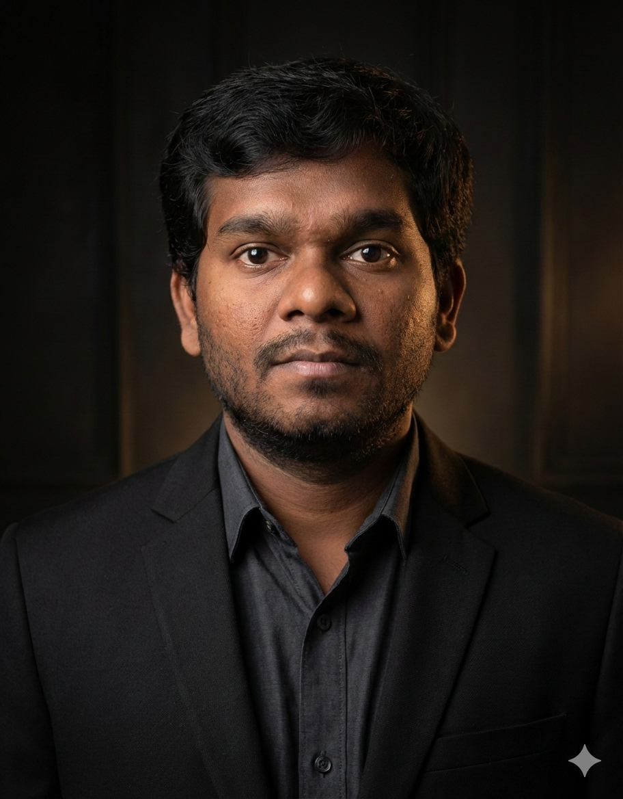

Electrical Engineer | Social Robotics & Autonomous Systems
I am Hoashalarajh Rajendran, an Electrical Engineer from Trincomalee, Sri Lanka—a region known for its rich cultural heritage and long history. I was educated at T/R.K.M. Sri Koneswara Hindu College, where dedicated teachers laid the foundation for my academic and personal development. I later earned my B.Sc. Engineering (Hons.) in Electrical Engineering from the University of Moratuwa, Sri Lanka’s leading technical university. I graduated with strong academic standing, complemented by professional internships at leading core electrical engineering companies in Sri Lanka. Following my undergraduate studies, I completed a Master’s degree with a research focus on Human–Robot Interaction, an experience that significantly strengthened my analytical thinking, research methodology, and intellectual independence. I remain deeply grateful to the University of Moratuwa and its faculty for shaping my ability to think rigorously and critically.